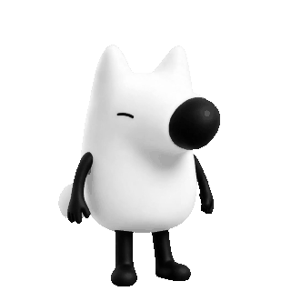
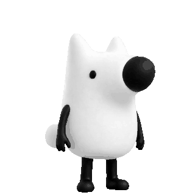

同频提问局一起把问题聊清楚
提出一个你想解决的问题
找到选择同一选项的人，
一起把问题聊清楚。
找到同一问题的人，一起把问题聊清楚。
疑问社区
把一对一没解决的问题交给大家
交流中仍有疑问时，可扩展为话题，让社区一起补充思路。
暂时没有公开话题。
尚未进入房间
双方都可以持续交流；点击“结束并整理”后才进入总结。
我的问题卡片
双方确认问题解决后记录一次。累计 1、3、10 次，徽章逐步成长。
好友
正在读取好友列表…


同频提问局一起把问题聊清楚提出一个你想解决的问题
找到同一问题的人，一起把问题聊清楚。
疑问社区
交流中仍有疑问时，可扩展为话题，让社区一起补充思路。
暂时没有公开话题。
双方都可以持续交流；点击“结束并整理”后才进入总结。
双方确认问题解决后记录一次。累计 1、3、10 次，徽章逐步成长。
正在读取好友列表…